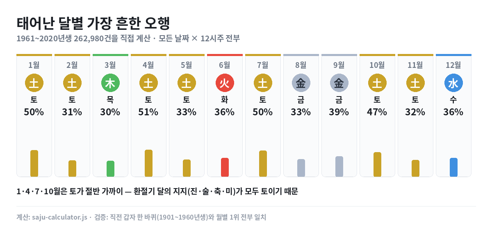
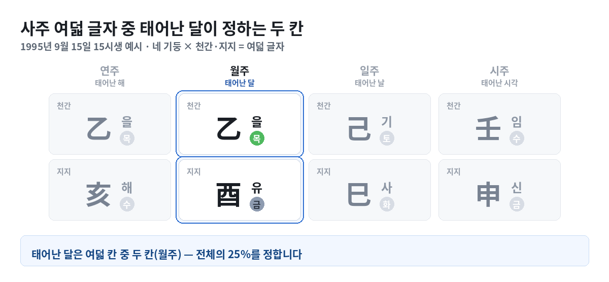

1·4·7·10월에 태어나면 토(土)가 절반 — 26만 건을 세어 봤습니다
사주를 보면 "당신은 토(土)가 강하다" 같은 말을 듣습니다. 그런데 그게 태어난 달과 관계가 있을까요? 궁금해서 직접 세어 봤습니다.
결론부터
관계가 있습니다. 그것도 꽤 뚜렷하게요.
- 1·4·7·10월생은 토(土)가 절반 가까이 — 최대 51.2%
- 3월은 목(木), 6월은 화(火), 9월은 금(金), 12월은 수(水)
- 나머지 달(2·5·8·11월)은 1·2위가 접전입니다

태어난 달은 여덟 칸 중 두 칸입니다
먼저 사주가 어떻게 생겼는지부터 보시는 게 빠릅니다.
사주(四柱)는 말 그대로 기둥 넷입니다. 태어난 해·달·날·시각이 각각 기둥 하나씩이고, 기둥마다 천간 한 글자 + 지지 한 글자가 붙습니다. 그래서 4 × 2 = 여덟 글자, 사주팔자죠.

태어난 달이 정하는 건 이 중 파란 두 칸(월주) — 전체의 25%입니다. 이 글에서 세어 본 건 정확히 "저 두 칸이 나머지 여섯 칸까지 얼마나 끌고 가느냐"입니다.
어떻게 셌나
1961년부터 2020년생까지 60년치, 모든 날짜, 12시주를 전부 계산했습니다. 총 262,980건입니다.
60년으로 끊은 데는 이유가 있습니다. 연주(年柱)는 60갑자 주기를 돕니다. 60의 배수가 아닌 구간을 쓰면 특정 간지가 한 번 더 들어가 분포가 기울어지죠. 한 바퀴를 통째로 쓰면 그 편향이 없어집니다.
검증도 했습니다. 직전 갑자 한 바퀴(1901~1960년생, 525,600건)를 따로 계산해 맞춰 봤더니 월별 1위가 12개월 전부 일치했고, 비율 편차는 0.1%p였습니다.
| 달 | 1위 | 비율 | 달 | 1위 | 비율 | |
|---|---|---|---|---|---|---|
| 1월 | 토 | 50.4% | 7월 | 토 | 49.5% | |
| 2월 | 토 | 31.0% | 8월 | 금 | 33.4% | |
| 3월 | 목 | 30.5% | 9월 | 금 | 39.2% | |
| 4월 | 토 | 51.2% | 10월 | 토 | 46.8% | |
| 5월 | 토 | 32.6% | 11월 | 토 | 32.2% | |
| 6월 | 화 | 35.5% | 12월 | 수 | 35.8% |
왜 환절기 달에 토가 몰리나
사주의 지지(地支)는 열두 글자입니다. 자·축·인·묘·진·사·오·미·신·유·술·해. 이 중 진(辰)·술(戌)·축(丑)·미(未) 네 글자가 토입니다.
그리고 이 넷은 각각 계절이 바뀌는 길목에 놓입니다. 양력으로 치면 1·4·7·10월이 여기에 해당합니다.
지지 열둘 중 토가 넷 — 다른 오행은 둘씩인데 토만 두 배입니다. 환절기 달에 태어나면 월지가 토일 확률이 높고, 그래서 우세 오행이 토로 기웁니다.
반대로 3월(목)·6월(화)·9월(금)·12월(수)은 각 계절이 가장 무르익은 때입니다. 봄의 한가운데가 목, 여름이 화, 가을이 금, 겨울이 수 — 오행이 계절과 맞물려 있다는 설명이 데이터에서도 그대로 보입니다.
그래서 내 사주는?
주의하실 게 있습니다. 태어난 달만으로 오행이 정해지지 않습니다.
위 그림에서 보셨듯 달이 정하는 건 여덟 칸 중 둘이고, 나머지 여섯 칸이 결과를 흔듭니다. 표의 숫자는 "그 달에 태어난 사람들 중 가장 많은 쪽"이지 "그 달이면 반드시"가 아닙니다.
특히 태어난 시각이 생각보다 크게 바꿉니다. 시각도 똑같이 두 칸이거든요. 같은 날에 태어나도 시각이 다르면 우세 오행이 달라지는 경우가 72.6%였는데, 이건 따로 정리해 뒀습니다.
한계
- 생일 분포를 균등 가정했습니다. 실제 출생은 계절에 따라 편중됩니다.
- 오행 비율은 여덟 글자의 오행을 세어 낸 값입니다. 지장간·왕상휴수 같은 심화 이론은 넣지 않았습니다.
- 절기 경계는 태양 황경으로 계산했습니다(1900~2100년 오차 수 분).